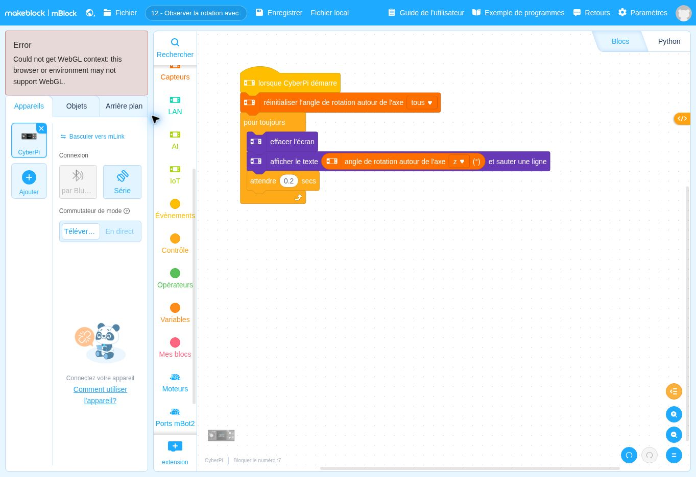

Observer une rotation avec l’IMU
Une rotation mesurée est-elle un cap absolu ?
Fehmi KLABI · Professeur de technologie · Formateur · Conseiller pédagogique
Ce que vous cherchez à comprendre
Vous souhaitez disposer d’une information sur la rotation du robot. Vous observez d’abord la mesure sans commander les moteurs. Cela permet de discuter de la référence zéro et de la différence entre une rotation accumulée et une direction absolue.
Apprentissage principal : Comprendre l’initialisation d’une mesure et les limites d’une information gyroscopique.
Prérequis et matériel : CyberPi immobile au lancement. Aucun capteur externe nécessaire. Connaître une rotation d’environ 90°.
Lire le comportement avant les blocs
Les lignes suivent l’ordre du programme. Une ligne en retrait appartient au choix ou à la boucle qui la précède. Cet algorithme décrit le fichier fourni ; il ne constitue pas la preuve d’un fonctionnement sur votre robot.
AU DÉMARRAGE DU PROGRAMME
Remettre à zéro les angles de rotation de tous les axes.
RÉPÉTER SANS FIN
Effacer la console à l’écran.
Lire l’angle de rotation accumulé autour de l’axe Z.
Afficher cet angle en degrés.
Attendre 0,2 seconde.
FIN DE LA BOUCLERelier chaque groupe de blocs à l’algorithme

| Ce que vous repérez dans la capture | Ce que cela signifie |
|---|---|
| La remise à zéro | Elle fixe la référence au lancement du programme. |
| L’axe Z | Sur le robot posé à plat, il permet d’observer les rotations dans le plan du sol. |
| La mesure de rotation et la console | Le programme affiche une rotation accumulée. Il ne commande pas une rotation. |
| La boucle et l’attente | Elles renouvellent l’affichage toutes les 0,2 s, hors temps d’exécution. |
Vérifier un résultat, puis l’expliquer
- Lancez avec CyberPi immobile et relevez la valeur initiale.
- Tournez le robot à la main d’environ 90° dans un sens, puis dans l’autre. Comparez les signes.
- Laissez-le immobile et observez l’évolution de la valeur au cours du temps.
Si le résultat diffère de votre prévision
Si la valeur initiale est instable, recommencez avec le robot immobile. Une dérive n’implique pas que le programme contient une commande de mouvement cachée.
Préparer une séance de technologie
Ce fichier prépare une réflexion sur la mesure dans une boucle de commande. Avant de faire corriger un angle, vous pouvez demander quelle information est disponible, à partir de quelle référence et avec quelle limite.
Ce que vous pouvez fournir et laisser chercher
Fournissez le programme de lecture. Laissez concevoir un protocole qui distingue changement d’orientation et dérive.
La trace de compréhension à demander
Un relevé angle attendu / angle affiché / temps et une phrase sur la référence de mesure.